This guide provides a deep dive into the internal architecture of Infinispan, covering the core building blocks, clustering, persistence, and server subsystems.
1. Infinispan architecture
1.1. Architecture overview
Infinispan is a distributed, in-memory key/value data store with optional persistent storage. Its architecture is built around several core subsystems that work together to provide caching, clustering, persistence, and remote access.
The following diagram shows a high-level view of the major subsystems and how they relate to each other.
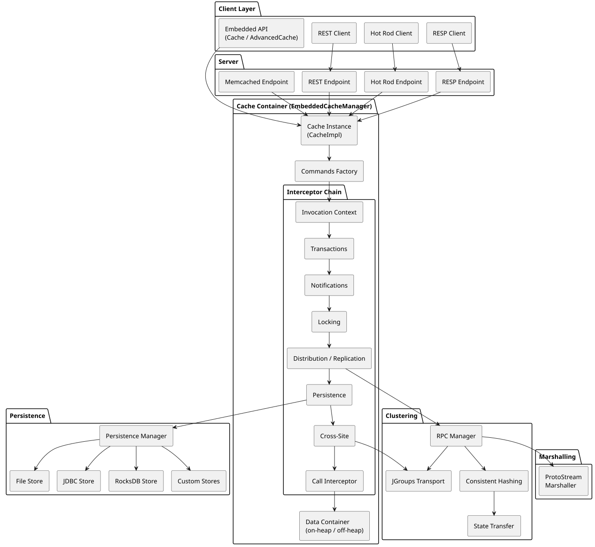
1.1.1. Core subsystems
Infinispan is organized into the following major subsystems:
- Cache Container (EmbeddedCacheManager)
-
The top-level entry point that manages cache lifecycle, global configuration, and cluster membership. Each
EmbeddedCacheManagerinstance represents a single node in the cluster and can host multiple named caches. - Interceptor Chain
-
Every cache operation flows through a chain of interceptors, each responsible for a cross-cutting concern such as transactions, locking, distribution, or persistence. This is the backbone of Infinispan’s processing pipeline.
- Clustering
-
Provides distributed communication via JGroups, consistent hashing for data distribution, and state transfer for rebalancing data when the cluster topology changes.
- Persistence
-
Pluggable cache stores that persist data to external storage such as the filesystem, JDBC databases, or RocksDB.
- Marshalling
-
Serializes and deserializes Java objects using ProtoStream, a Protocol Buffers-based format that supports schema evolution.
- Server
-
Exposes caches over multiple network protocols: Hot Rod (binary), REST (HTTP/JSON), RESP (Redis-compatible), and Memcached.
1.2. Cache manager and cache hierarchy
The cache manager is the entry point to Infinispan. It manages the lifecycle of individual caches, holds global configuration, and coordinates cluster membership.
1.2.1. Class hierarchy
The following diagram shows the key interfaces and classes that make up the cache manager and cache hierarchy.
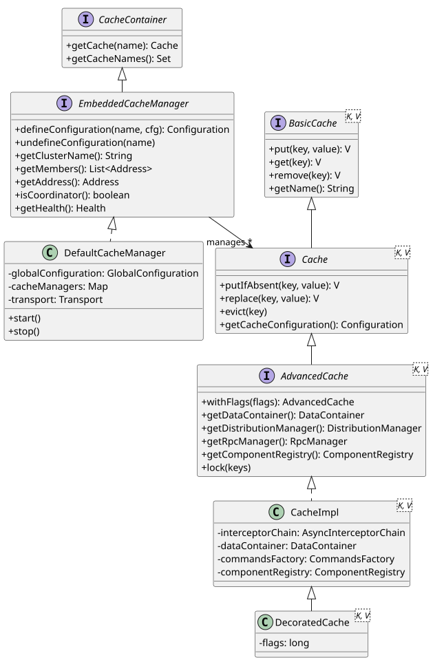
1.2.2. Component registry
Each cache instance has an associated ComponentRegistry that manages the lifecycle of internal components through dependency injection.
Infinispan uses two scopes of component registries:
- Global scope (
GlobalComponentRegistry) -
Holds components shared across all caches on a node: transport, marshaller, thread pools, and global configuration.
- Cache scope (
ComponentRegistry) -
Holds per-cache components: the interceptor chain, data container, distribution manager, lock manager, and persistence manager.
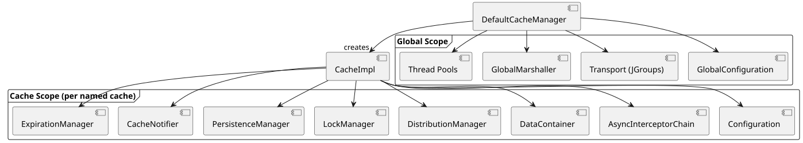
Cache-scoped registries delegate to the global registry when resolving dependencies. If a component is not found in the cache scope, the lookup falls through to the global scope automatically.
Component lifecycle
Every component in the registry progresses through a state machine that governs instantiation, dependency injection, and lifecycle callbacks.
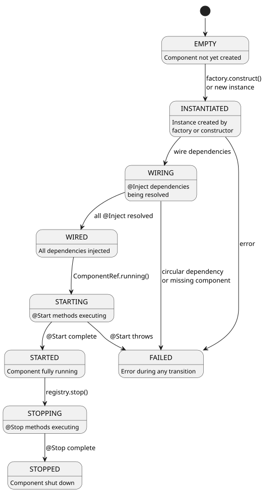
The key transitions are:
-
Instantiation — The registry creates the component via a factory or no-arg constructor.
-
Wiring — The generated
ComponentAccessor.wire()method injects all@Injectdependencies. Eager dependencies (those not wrapped inComponentRef) are started recursively at this point. -
Starting — Deferred until application code calls
ComponentRef.running(). All@Startmethods are invoked, walking up the class hierarchy (superclass first). -
Stopping — When the registry shuts down, components are stopped in reverse order of their startup (LIFO). All
@Stopmethods are invoked in reverse inheritance order.
Annotations
Infinispan defines a set of annotations in the org.infinispan.factories.annotations package that drive dependency injection and lifecycle management.
These annotations use @Retention(RetentionPolicy.CLASS) — they are processed at compile time by an annotation processor and are not available via runtime reflection.
@Inject-
Marks a field or setter method for dependency injection. The component name is derived from the field type or method parameter type. Fields must be package-private or public.
@Inject DataContainer dataContainer; @Inject void setRpcManager(RpcManager rpcManager) { ... } @Start-
Marks a no-argument method to be called after all dependencies are wired. Used for initialization that depends on injected components.
@Stop-
Marks a no-argument method to be called when the component is being shut down. Used for resource cleanup.
@Scope-
Declares the component’s scope. The scope determines which registry holds the component and must be consistent across the class hierarchy.
Scope Description GLOBALA single instance shared by all caches (cache manager level).
NAMED_CACHEA separate instance per cache.
NONENot cached between requests. Used for factories and abstract base classes whose concrete subclasses may be either
GLOBALorNAMED_CACHE.SERVERBound to the lifecycle of the server.
@SurvivesRestarts-
Marks a component that should persist across registry stop/start cycles rather than being removed. Only used for critical bootstrapping components.
@DefaultFactoryFor-
Marks a factory class, listing the component classes or names it can create.
Compile-time annotation processing
Infinispan avoids runtime reflection for component wiring.
Instead, a compile-time annotation processor (ComponentAnnotationProcessor) scans annotated classes and generates code that performs dependency injection and lifecycle callbacks directly.
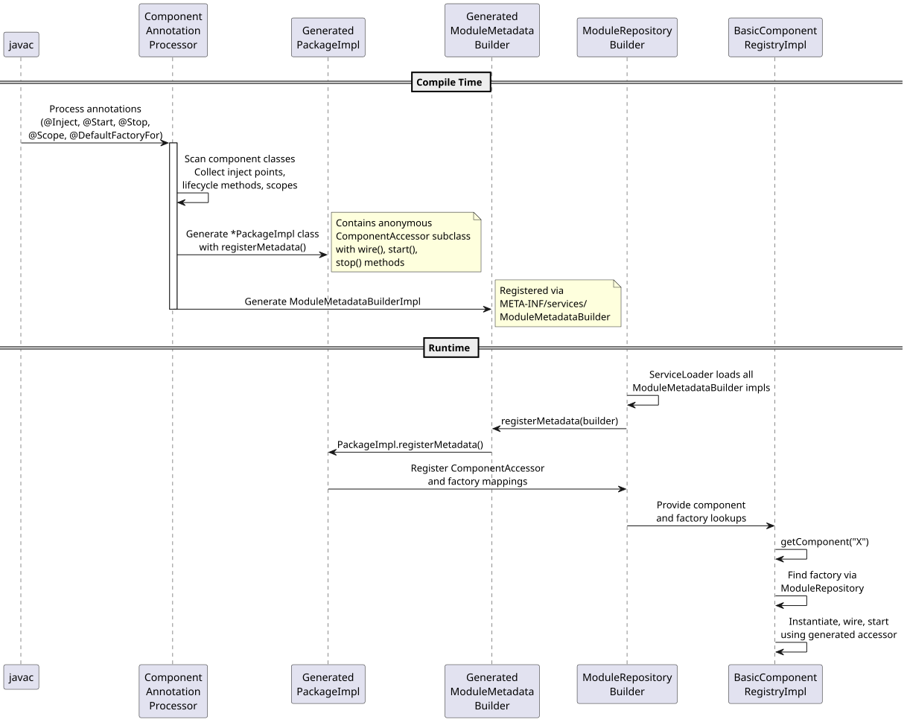
For each annotated component, the processor generates a ComponentAccessor subclass with concrete implementations of:
wire(instance, context, start)-
Calls
context.get()for each@Injectdependency, assigning fields and calling setter methods directly — no reflection. start(instance)-
Calls the component’s
@Startmethods in superclass-first order. stop(instance)-
Calls the component’s
@Stopmethods in reverse order.
These generated accessors are registered in per-package *PackageImpl classes, which are aggregated into a ModuleMetadataBuilderImpl per module.
At runtime, the ModuleRepository loads all builders via ServiceLoader and provides the registry with direct accessor references for every known component.
Component factories
When the registry needs a component that is not yet registered, it looks up a factory via the ModuleRepository.
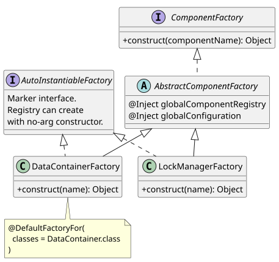
Factories are discovered at compile time via the @DefaultFactoryFor annotation and registered in the ModuleRepository.
The resolution flow is:
-
The registry receives a request for a component (e.g.,
DataContainer). -
It looks up the factory name in the
ModuleRepositoryusing the component name. -
If the factory implements
AutoInstantiableFactory, the registry creates it with a no-arg constructor. -
The factory’s own dependencies are injected and it is started.
-
factory.construct(componentName)is called to create the component instance. -
The new component is wired and registered in the usual way.
Module system
Infinispan is organized into modules, each identified by an @InfinispanModule annotation on a ModuleLifecycle implementation.
@InfinispanModule(name = "core",
requiredModules = "commons")
public class LifecycleManager implements ModuleLifecycle { ... }At compile time, the annotation processor generates a ModuleMetadataBuilder implementation for each module and registers it via META-INF/services.
At runtime, the ModuleRepository.Builder loads all module builders, resolves dependencies between modules, sorts them topologically, and calls registerMetadata() on each to populate the component and factory registries.
This allows Infinispan modules (core, server, query, etc.) to contribute their own components and factories without requiring a central registration point.
1.3. Configuration
Infinispan uses a hierarchical, type-safe configuration system based on attributes, attribute sets, and configuration elements. Configuration is built programmatically using a fluent builder API, or declaratively from XML, JSON, or YAML. Once built, configuration objects are protected (made immutable) while still allowing select attributes to be modified at runtime.
1.3.1. Configuration hierarchy
Infinispan has two levels of configuration:
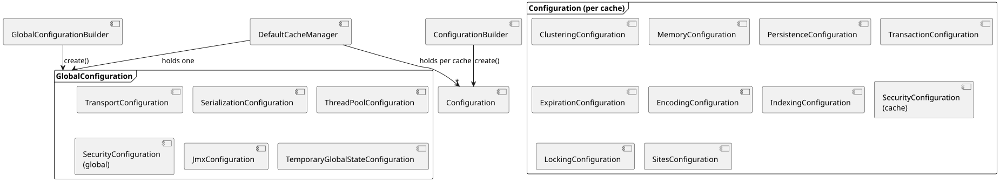
- GlobalConfiguration
-
A single instance per cache manager, holding settings that apply to all caches on a node: transport, serialization, thread pools, global security, and JMX.
- Configuration
-
One instance per named cache, holding cache-specific settings: clustering mode, memory limits, persistence stores, transactions, encoding, indexing, and expiration.
Both extend ConfigurationElement, forming a tree of nested configuration elements, each backed by an AttributeSet.
1.3.2. Attributes
An Attribute is the fundamental unit of configuration.
It holds a typed value, tracks whether the value has been modified from its default, and supports change listeners.
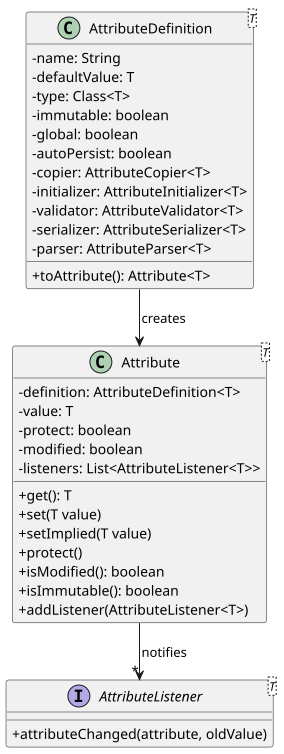
Each attribute is created from an AttributeDefinition that declares its properties:
- Name and type
-
The attribute’s identifier and Java type.
- Default value
-
The value used when no explicit value is set. For mutable types (e.g., lists, maps), an
AttributeInitializerprovides a fresh instance for each attribute to avoid shared state. - Immutability
-
An immutable attribute cannot be modified after the configuration is protected (built). By default, attributes are mutable, allowing runtime changes even after the cache is started.
- Global flag
-
A global attribute must have the same value across all nodes in the cluster. During topology changes, global attributes are checked for consistency — mismatches cause an error. Local attributes can differ per node and are skipped during cluster-wide comparison.
- Auto-persist
-
Controls whether the attribute is included when serializing the configuration to XML, JSON, or YAML.
- Validator
-
An
AttributeValidatorthat checks new values before they are accepted. - Copier
-
An
AttributeCopierfor deep-copying complex values when reading configuration from a template.
Attribute listeners
Attributes support change listeners that are notified whenever the value changes. This is the mechanism Infinispan uses to react to runtime configuration changes without restarting the cache.
attribute.addListener((attr, oldValue) -> {
// React to configuration change
});When set() is called on a mutable attribute — even on a protected configuration — listeners fire with the old value, allowing components to adapt dynamically.
1.3.3. Attribute sets and configuration elements
Attributes are grouped into an AttributeSet, which is the backing store for a ConfigurationElement.
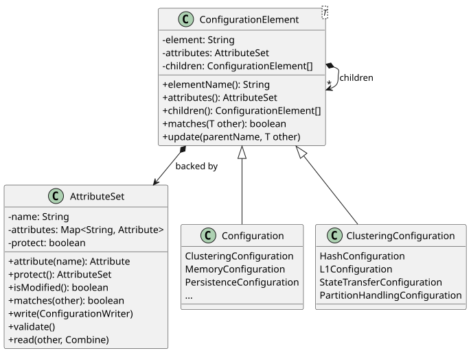
AttributeSet-
Aggregates attributes under a common name. The
protect()method freezes immutable attributes, returning a new protected set. Mutable attributes remain changeable even in a protected set. ConfigurationElement-
The base class for all configuration nodes. Each element has an
AttributeSetand an array of child elements, forming the configuration tree. Methods likematches(),update(), andvalidateUpdate()operate recursively over the tree for cluster-wide configuration comparison.
1.3.4. Builder pattern
Configurations are constructed using a builder API that mirrors the configuration hierarchy.
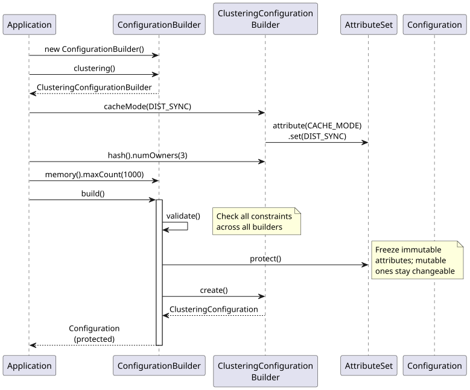
The build process follows three steps:
-
Set values — The application uses fluent methods that set attributes on the underlying
AttributeSet.Configuration config = new ConfigurationBuilder() .clustering() .cacheMode(CacheMode.DIST_SYNC) .hash().numOwners(3) .memory() .maxCount(1000) .build(); -
Validate —
validate()is called on every builder in the tree, checking attribute validators and cross-attribute constraints. -
Create and protect —
create()callsattributes.protect()on each attribute set to freeze immutable attributes, then constructs the configuration element tree. The resulting configuration object is safe to share across threads.
Template inheritance
Builders can inherit from an existing configuration using the read() method with a Combine strategy:
| Strategy | Behavior |
|---|---|
|
Overlay attributes override the template only if explicitly modified. |
|
Overlay attributes always replace the template values. |
|
Repeated elements (e.g., store configurations) are combined. |
|
Repeated elements from the overlay replace those from the template. |
Named cache configurations can extend a parent configuration defined in the same file or use the built-in default configuration as a base.
1.3.5. Declarative configuration: parsing
Infinispan supports XML, JSON, and YAML configuration formats, all parsed through the ParserRegistry.
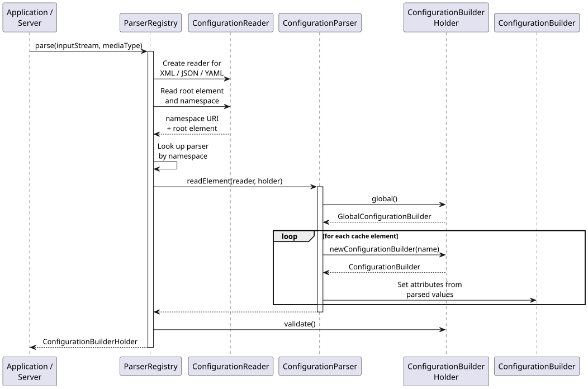
Parsers are discovered via ServiceLoader.
Each parser declares the namespace URIs it handles using @Namespace annotations:
@Namespace(root = "cache-container",
uri = "urn:infinispan:config:16.2")
public class CacheParser implements ConfigurationParser { ... }The ParserRegistry matches the document’s namespace to the correct parser, which populates builders in a ConfigurationBuilderHolder.
This holder collects the global configuration builder and a map of named cache configuration builders, then resolves template inheritance and validates the result.
1.3.6. Declarative configuration: serialization
Configurations can be serialized back to XML, JSON, or YAML for persistence or export. Serialization is driven by the attribute metadata.
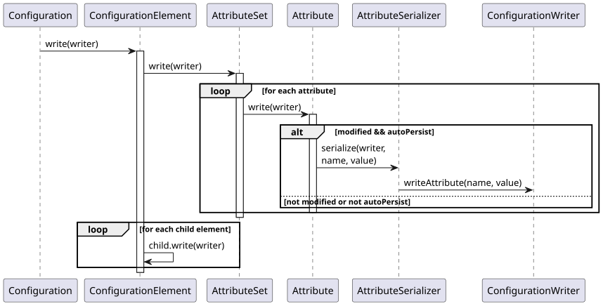
An attribute is serialized only if it is modified (differs from the default) and has autoPersist enabled.
Each AttributeDefinition can specify a custom AttributeSerializer for complex types:
| Serializer | Usage |
|---|---|
|
Boolean and toString()-based serialization. |
|
Masks sensitive values unless clear-text output is enabled. |
|
Writes the fully-qualified class name of an instance. |
|
Writes collections as space-separated strings. |
|
Writes |
The ConfigurationWriter abstraction handles format-specific output (XML elements and attributes, JSON objects, or YAML mappings).
1.3.7. Runtime configuration changes
After a cache is started, mutable attributes can still be modified.
Immutable attributes are frozen by protect() and reject changes with an exception.
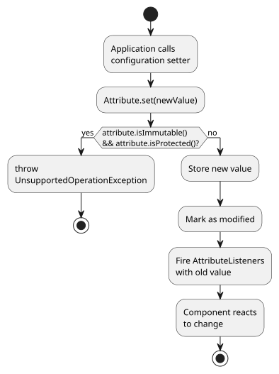
For example, changing the remote timeout on a running clustered cache:
cache.getCacheConfiguration()
.clustering()
.remoteTimeout(30000);The remoteTimeout attribute is defined as mutable, so this call succeeds even on a running cache.
The RpcManager listens for changes on this attribute and updates its timeout dynamically.
Global attributes that are both immutable and global cannot be changed at runtime and must match across the cluster. Local, mutable attributes can differ per node and be adjusted independently.
1.3.8. Global state
Infinispan can persist cluster-wide configuration state to disk so that runtime-created caches, templates, and configuration changes survive restarts.
This is controlled by the ConfigurationStorage mode in the global configuration.
Volatile vs persistent state
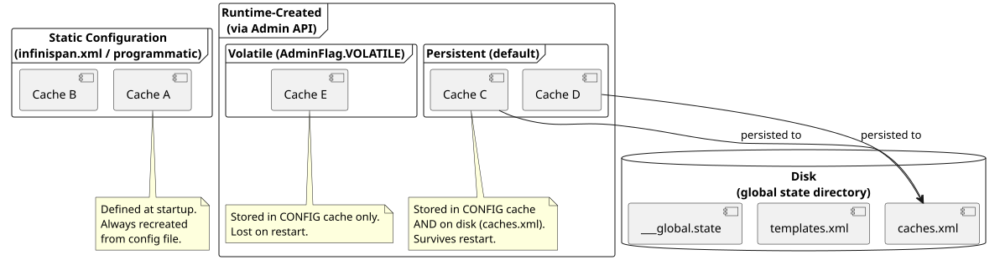
Infinispan distinguishes three categories of cache configurations:
- Static configurations
-
Defined in the configuration file or programmatically before the cache manager starts. These are always recreated from the configuration source on startup. They are not part of the global state system.
- Persistent runtime configurations
-
Created via the admin API without the
VOLATILEflag. These are stored in an internal replicated cache (org.infinispan.CONFIG) for cluster-wide distribution, and persisted to disk (caches.xml/templates.xml) so they survive restarts. - Volatile runtime configurations
-
Created via the admin API with the
AdminFlag.VOLATILEflag. These exist only in the internal CONFIG cache for the lifetime of the cluster. They are not persisted to disk and are lost when all nodes shut down.
Configuration storage modes
The ConfigurationStorage setting controls how the node handles runtime configuration changes:
| Mode | Behavior |
|---|---|
|
Runtime cache creation and removal is disabled. Configuration can only come from the static configuration file. |
|
Runtime caches can be created but are never persisted to disk. All runtime caches are lost on restart. |
|
Runtime caches are persisted to |
|
Configuration storage is managed by the server runtime (e.g., for container-managed deployments). |
|
A user-provided |
Runtime cache creation and removal
When a cache is created or removed at runtime, the change is replicated across the cluster using the internal CONFIG cache.
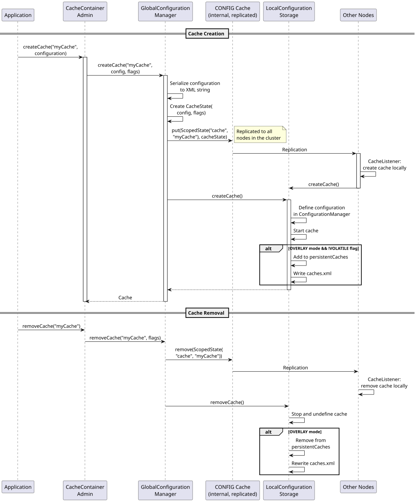
The GlobalConfigurationManager orchestrates this flow:
-
The application calls
cacheManager.administration().createCache(…). -
The configuration is serialized to XML and wrapped in a
CacheStatealong with any admin flags. -
The
CacheStateis put into the internal CONFIG cache, keyed by aScopedState("cache", cacheName). -
The CONFIG cache is replicated, so all nodes receive the entry.
-
On each node, a
GlobalConfigurationStateListenerreacts to the cache event and callsLocalConfigurationStorage.createCache()to define and start the cache locally. -
In
OVERLAYmode, theOverlayLocalConfigurationStoragealso persists the configuration tocaches.xml.
The same pattern applies to template creation and removal.
Cluster-wide configuration updates
Mutable configuration attributes can be updated at runtime across the entire cluster using the admin API with the UPDATE flag.
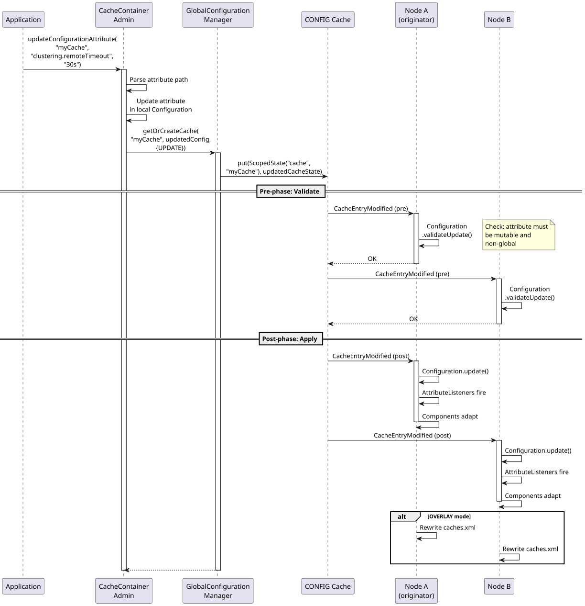
The update follows a two-phase approach using CONFIG cache listeners:
-
Pre-phase (validate) — Each node receives a
CacheEntryModifiedpre-event and callsConfiguration.validateUpdate(), which walks the configuration tree recursively. Only mutable, non-global attributes are allowed to change. Immutable or global attribute changes are rejected with an exception, aborting the update. -
Post-phase (apply) — If validation passes on all nodes, the post-event triggers
Configuration.update(), which applies the new attribute values.AttributeListenercallbacks fire on each node, allowing components (e.g.,RpcManagerfor timeout changes) to react immediately.
This mechanism ensures that mutable attribute changes are validated for compatibility before being applied atomically across the cluster.
Global state directory
When global state persistence is enabled, Infinispan maintains a state directory on disk:
{persistentLocation}/
├── ___global.state Global metadata (version, timestamp)
├── caches.xml Persisted cache configurations
├── caches.xml.lck Lock file for atomic writes
├── templates.xml Persisted cache templates
├── templates.xml.lck Lock file for atomic writes
└── {scope}.state Per-component state files
The ___global.state file records the Infinispan version and a timestamp, used to detect unclean shutdowns.
On startup, if the global state indicates an unclean shutdown, Infinispan takes a configurable action: fail startup, purge stale state, or ignore the inconsistency.
Startup restoration
On startup, the GlobalConfigurationManager restores runtime-created caches:
-
The
LocalConfigurationStorageloads persisted configurations fromcaches.xmlandtemplates.xml. -
If the node joins an existing cluster, it also receives CONFIG cache entries replicated from other nodes.
-
Each persisted configuration is validated for compatibility with any cluster-wide version already in the CONFIG cache.
-
Caches and templates are created locally, matching the state of the rest of the cluster.
1.4. Interceptor chain
The interceptor chain is the central processing pipeline in Infinispan.
Every cache operation, whether a simple get or a distributed put, flows through an ordered chain of interceptors.
Each interceptor handles a specific cross-cutting concern and delegates to the next interceptor in the chain.
1.4.1. How the chain works
The chain is implemented as a linked list of AsyncInterceptor instances managed by AsyncInterceptorChainImpl.
When a cache operation is invoked, the chain starts execution from the first interceptor and proceeds through the chain.
Each interceptor can:
-
Execute logic before passing control to the next interceptor
-
Modify or inspect the command
-
Short-circuit the chain by returning a result directly
-
Execute logic after the next interceptor returns (post-processing)
All interceptors support asynchronous execution through CompletionStage, avoiding thread blocking during remote calls and I/O operations.
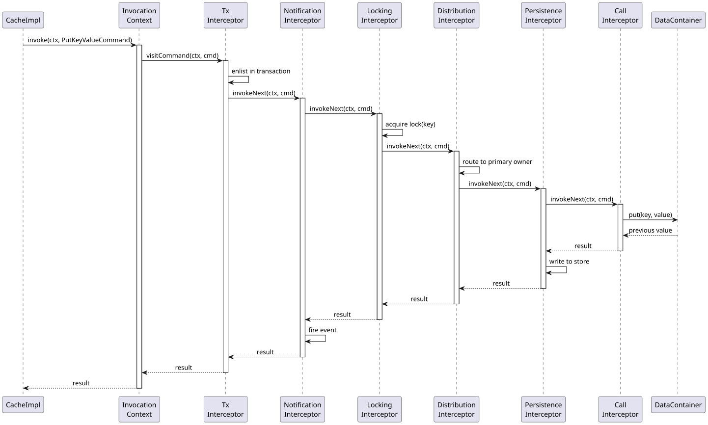
1.4.2. Interceptor class hierarchy
All interceptors extend BaseAsyncInterceptor.
Most concrete interceptors extend DDAsyncInterceptor, which implements the Visitor pattern for type-safe command dispatch.
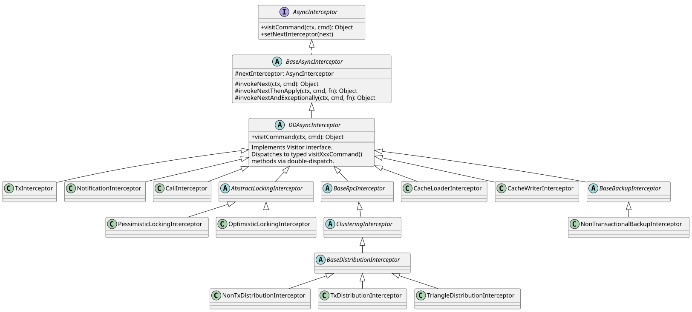
1.4.3. Default chain order
The interceptor chain is assembled at cache startup based on the cache configuration. The typical ordering is:
| Order | Interceptor | Responsibility |
|---|---|---|
1 |
|
Creates and initializes the invocation context for the operation. |
2 |
|
Verifies that keys and values can be serialized. |
3 |
|
Handles manual batch demarcation. |
4 |
|
Manages transaction enlistment, prepare, commit, and rollback. |
5 |
|
Fires cache event notifications to registered listeners. |
6 |
|
Manages entry versioning for optimistic locking. |
7 |
|
Acquires and releases locks. The specific implementation depends on the transaction mode (pessimistic or optimistic). |
8 |
|
Wraps cache entries for transactional isolation. |
9 |
|
Routes commands to the correct owners in distributed and replicated modes. |
10 |
|
Coordinates operations during topology changes and state transfer. |
11 |
|
Loads entries from persistent stores on cache miss. |
12 |
|
Writes entries to persistent stores after mutation. |
13 |
|
Replicates operations to remote sites for cross-site replication. |
14 |
|
Executes the actual cache operation on the data container. Always last in the chain. |
Not all interceptors are present in every chain. For example, transaction interceptors are omitted for non-transactional caches, and distribution interceptors are omitted for local caches.
1.5. Commands and the Visitor pattern
Infinispan uses the Command pattern to represent every cache operation as a first-class object. Commands encapsulate the operation’s parameters, can be serialized for remote execution, and flow through the interceptor chain as a unit of work.
1.5.1. Command flow
When a user calls a cache method such as cache.put(key, value), the following sequence occurs:
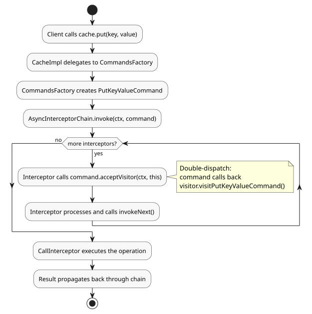
1.5.2. Double-dispatch (Visitor pattern)
The Visitor pattern eliminates the need for instanceof checks when interceptors handle different command types.
The VisitableCommand interface defines:
Object acceptVisitor(InvocationContext ctx, Visitor visitor);Each command implements this by calling the appropriate typed method on the visitor:
// In PutKeyValueCommand
public Object acceptVisitor(InvocationContext ctx, Visitor visitor) {
return visitor.visitPutKeyValueCommand(ctx, this);
}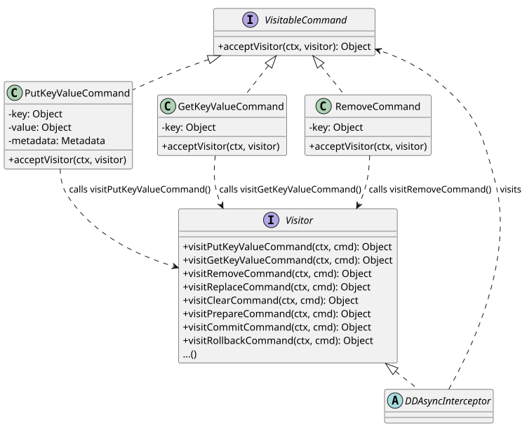
1.5.3. Command categories
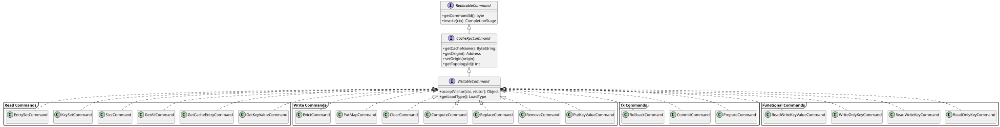
- Read commands
-
Retrieve data without modification:
GetKeyValueCommand,GetCacheEntryCommand,GetAllCommand,SizeCommand,KeySetCommand,EntrySetCommand. - Write commands
-
Mutate the cache:
PutKeyValueCommand,RemoveCommand,ReplaceCommand,ComputeCommand,ClearCommand,PutMapCommand,EvictCommand. - Transaction commands
-
Coordinate distributed transactions:
PrepareCommand(2PC prepare phase),CommitCommand,RollbackCommand. - Functional commands
-
Lambda-based operations:
ReadOnlyKeyCommand,ReadWriteKeyCommand,WriteOnlyKeyCommand,ReadWriteKeyValueCommand. These support the functional map API and enable efficient execution by clearly separating read and write intents.
1.6. Data container
The data container is the in-memory storage engine of Infinispan.
It holds cache entries as InternalCacheEntry objects and provides thread-safe access to them.
1.6.2. On-heap vs off-heap storage
Infinispan supports two storage modes:
- On-heap
-
Entries are stored as regular Java objects on the JVM heap. This is the default mode and provides the fastest access but is subject to garbage collection pressure.
- Off-heap
-
Entries are serialized and stored in native memory outside the JVM heap. On JDK 22 and later, Infinispan uses the Foreign Function & Memory (FFM) API (
java.lang.foreign.MemorySegment) for safe, supported access to off-heap memory. On earlier JDK versions, it falls back tosun.misc.Unsafe. This reduces GC pressure for large datasets and allows Infinispan to manage memory more predictably. Off-heap storage uses striped locking for concurrent access.
1.6.3. Segmentation
The data container is segmented to align with the consistent hash segments used for data distribution. Each segment can be independently iterated, transferred during rebalancing, or assigned to a persistent store partition.
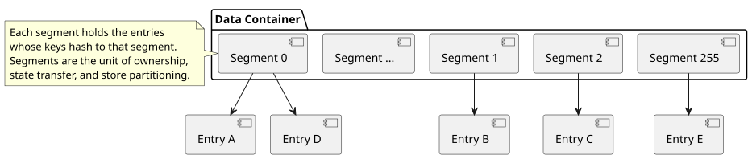
1.6.4. Expiration and eviction
- Expiration
-
Entries can have a lifespan (time since creation) and/or a max idle time (time since last access). The
ExpirationManagerlazily removes expired entries on access and runs periodic reaper tasks. - Eviction
-
When the data container exceeds a configured size (entry count or memory), the eviction policy removes entries. Infinispan uses Caffeine’s W-TinyLFU algorithm for near-optimal hit ratios. Evicted entries can be passivated to a persistent store rather than discarded.
1.7. Clustering and data distribution
Infinispan uses JGroups as its clustering transport to form clusters of nodes that communicate via reliable group messaging. Data is distributed across the cluster using consistent hashing, which maps keys to segments and segments to nodes.
1.7.1. Cluster formation
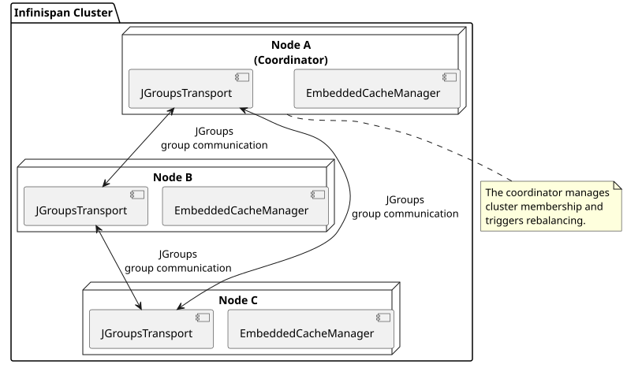
The JGroupsTransport class adapts the JGroups library to the Infinispan Transport interface.
JGroups handles:
-
Node discovery (UDP multicast, TCP, Kubernetes DNS, etc.)
-
Reliable message delivery with ordering guarantees
-
Failure detection and membership management
-
Message fragmentation and flow control
1.7.2. Consistent hashing
Infinispan divides the key space into a fixed number of segments (256 by default). Each segment is assigned to a list of owners — the first owner is the primary and the rest are backups.
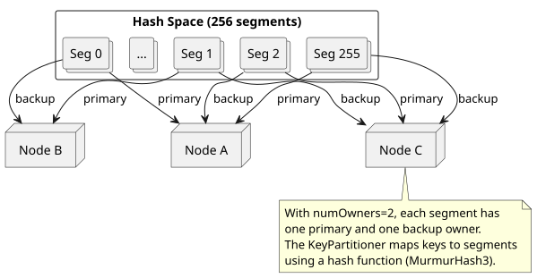
Key components
ConsistentHash-
Immutable mapping of segments to owners. Implementations include
DefaultConsistentHash(distributed mode) andReplicatedConsistentHash(replicated mode, where all nodes own all segments). ConsistentHashFactory-
Creates
ConsistentHashinstances. Variants includeDefaultConsistentHashFactory,TopologyAwareConsistentHashFactory(rack/machine-aware placement), andSyncConsistentHashFactory. KeyPartitioner-
Maps a key to a segment ID using MurmurHash3.
DistributionManager-
Provides the current
CacheTopology, which holds the read and write consistent hashes. During rebalancing, the read and write hashes may differ.
1.7.3. Cache modes
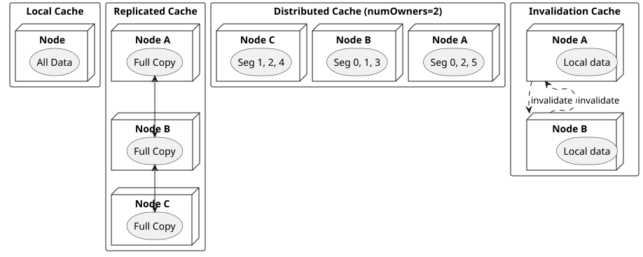
- Local
-
No clustering. Data exists on a single node only.
- Replicated
-
Every node holds a full copy of the data. Writes are replicated to all nodes. Reads are always local.
- Distributed
-
Data is partitioned across nodes using consistent hashing. Each entry is stored on
numOwnersnodes (typically 2). Reads may require remote lookups; writes go to all owners. - Invalidation
-
Each node maintains a local cache. On write, other nodes are sent invalidation messages to discard their stale copies. The authoritative data lives in an external store.
1.7.4. Write distribution patterns
Infinispan uses two different patterns to distribute write operations across owners in a cluster: lock forwarding and the triangle. The choice depends on the cache configuration.
When each pattern is used
| Configuration | Pattern | Interceptor |
|---|---|---|
Non-transactional distributed, embedded mode |
Triangle |
|
Non-transactional distributed, server mode |
Lock forwarding |
|
Non-transactional replicated |
Lock forwarding |
|
Transactional (any clustered mode) |
Lock forwarding |
|
Transactional + optimistic locking + REPEATABLE_READ |
Lock forwarding + versioning |
|
Lock forwarding
In the lock forwarding pattern, the primary owner acts as a coordinator: it acquires the lock, forwards the command to backup owners, waits for their responses, and only then replies to the originator.
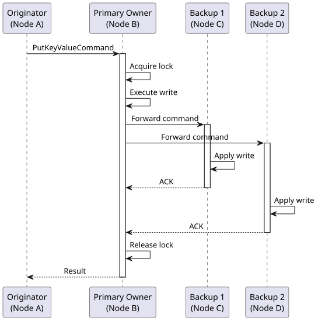
This pattern is used for transactional caches (where lock management must be coordinated with transaction boundaries), replicated caches, and server-mode distributed caches.
Triangle
The triangle pattern takes its name from the three-legged message flow between originator, primary owner, and backup owners. Unlike lock forwarding, the primary does not wait for backup acknowledgments — it replies to the originator immediately. Backups acknowledge directly to the originator instead of going back through the primary.
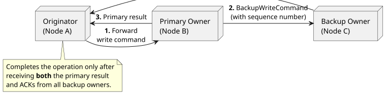
Detailed flow
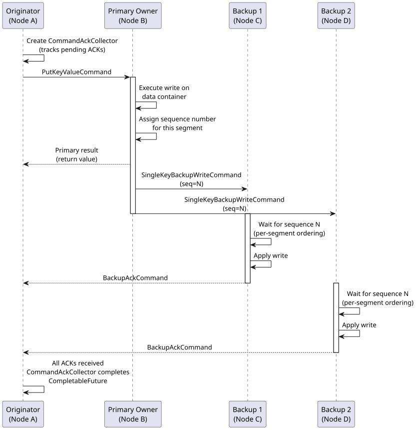
The steps in detail:
-
The originator creates a
CommandAckCollectorto track responses, then sends the write command to the primary owner. -
The primary owner executes the write on its data container, obtains a per-segment sequence number from
TriangleOrderManager, and sendsBackupWriteCommandto all backup owners in parallel. -
The primary returns its result to the originator immediately, without waiting for backup acknowledgments. This allows it to release its lock and process other writes.
-
Each backup owner waits until the command’s sequence number is the next expected for that segment (guaranteeing per-segment ordering), applies the write, then sends an acknowledgment directly to the originator.
-
The originator’s
CommandAckCollectorcompletes theCompletableFutureonce it has received the primary result and all backup ACKs. If any ACK does not arrive within the remote timeout, the operation fails.
Per-segment ordering
Backup owners must apply writes to the same segment in the same order as the primary owner.
The TriangleOrderManager assigns a monotonically increasing sequence number per segment on the primary side.
On the backup side, a TriangleOrderAction blocks execution until the incoming command’s sequence number matches the next expected sequence for that segment.
This allows writes to different segments to execute concurrently on backup nodes while maintaining strict ordering within each segment.
Triangle vs lock forwarding
Compared to lock forwarding, the triangle provides several advantages for non-transactional distributed caches:
-
Lower latency: The primary responds to the originator immediately after executing, rather than waiting for all backups first.
-
Higher throughput: The primary releases its lock sooner, allowing other writes to the same key to proceed.
-
Parallel backup writes: All backups receive the command simultaneously from the primary, not sequentially.
-
Non-blocking completion: The originator tracks acknowledgments via
CompletableFuture, avoiding thread blocking.
Lock forwarding remains necessary for transactional caches because lock ownership must be coordinated with the two-phase commit protocol, and for replicated caches where the write fan-out pattern differs.
1.7.5. State transfer
When nodes join or leave the cluster, Infinispan rebalances data to maintain the configured number of owners per segment.
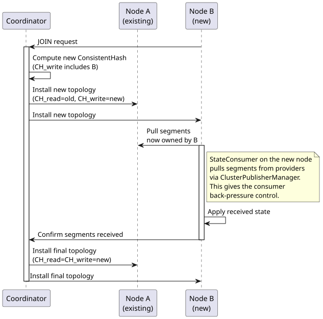
During rebalancing:
-
The write consistent hash reflects the new topology immediately, so writes go to the correct new owners.
-
The read consistent hash uses the old topology until state transfer completes, so reads still find data on old owners.
-
The
StateTransferInterceptorensures operations are retried if they arrive during a topology change.
State transfer is pull-based: the new owner’s StateConsumer requests segments from providers using the ClusterPublisherManager, giving the consumer control over flow and back-pressure.
The transfer is segment-based: only the segments whose ownership changed are transferred, minimizing data movement.
1.7.6. RPC manager
The RpcManager is the high-level API for sending commands to remote nodes.
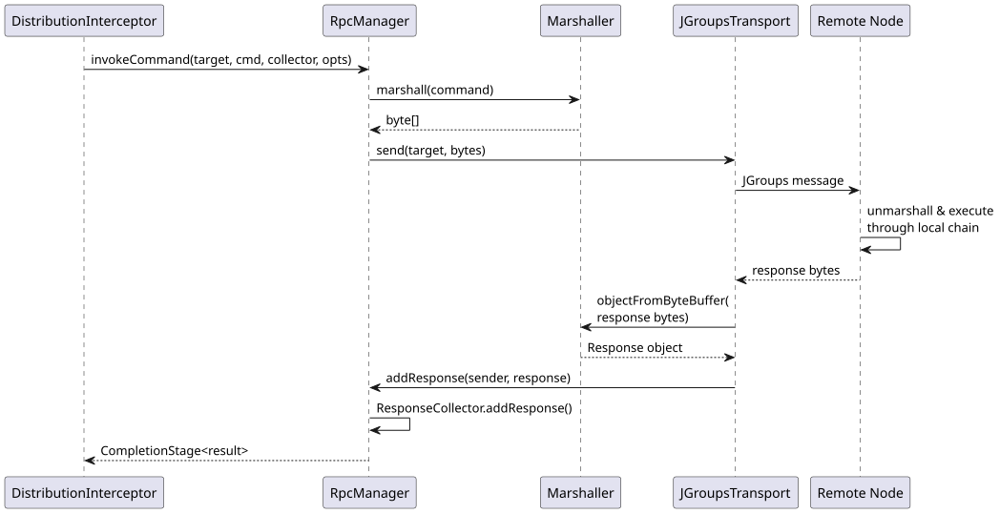
The RpcManager supports several invocation patterns:
-
Single target: Send to one specific node.
-
Multiple targets: Send to a collection of nodes and collect responses.
-
Broadcast: Send to all cluster members.
-
Staggered: Send to targets one at a time, proceeding to the next only if the first does not respond in time.
-
Fire-and-forget: Send without waiting for a response.
1.8. Partition handling and conflict resolution
In a distributed system, network failures can split the cluster into isolated partitions. Infinispan detects these splits, restricts operations to prevent inconsistencies, and automatically resolves conflicts when partitions merge.
1.8.1. Availability modes
A cache can be in one of three availability modes:
| Mode | Description |
|---|---|
|
Normal operation. All reads and writes are allowed. |
|
The cluster has detected a partition or data loss. Operations may be restricted depending on the configured partition handling strategy. |
|
The cache is shutting down gracefully and data is unavailable. |
1.8.2. Partition handling strategies
The whenSplit configuration determines how a cache behaves when a network partition is detected:
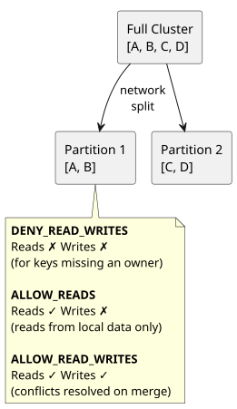
DENY_READ_WRITES-
Both reads and writes are denied for any key whose owners are not all present in the current partition. This is the safest strategy, preventing stale reads and conflicting writes.
ALLOW_READS-
Reads are allowed if the key exists locally; writes are denied for keys with missing owners. This allows applications to continue reading cached data during a split while preventing inconsistencies from writes.
ALLOW_READ_WRITES-
Both reads and writes are allowed in all partitions. The cache stays in
AVAILABLEmode, maximizing uptime at the cost of potential conflicts that must be resolved when partitions merge.
1.8.3. Partition detection and degraded mode
Infinispan relies on JGroups view changes and merge views to detect partitions.
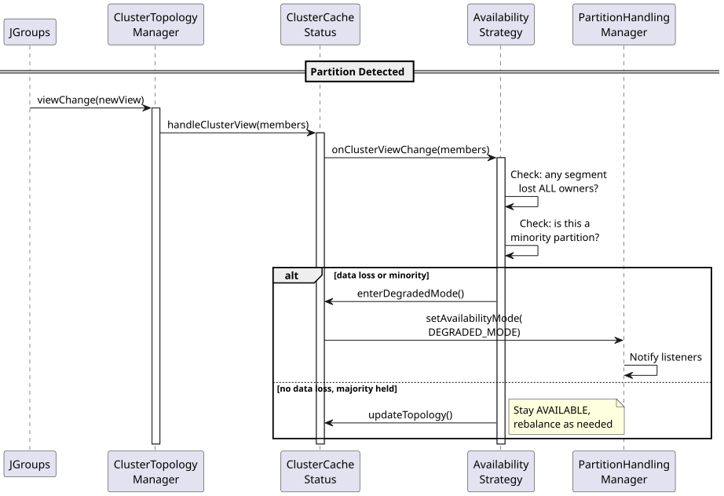
The AvailabilityStrategy makes the decision to enter degraded mode.
Infinispan provides two built-in strategies:
PreferConsistencyStrategy-
Enters
DEGRADED_MODEwhen any segment loses all owners or when the partition is a minority. Requires a majority partition to exit degraded mode. This is the default and safest choice. PreferAvailabilityStrategy-
Keeps the cache
AVAILABLEeven in minority partitions. Maximizes uptime but is more likely to produce conflicts.
1.8.4. Operation interception in degraded mode
The PartitionHandlingInterceptor sits in the interceptor chain and guards every cache operation based on the current availability mode.
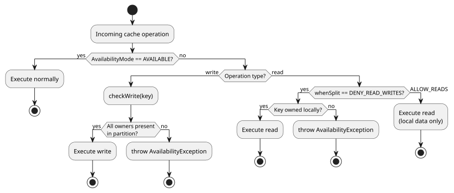
Bulk operations (clear(), keySet(), entrySet()) are always denied in degraded mode since they cannot guarantee completeness across a partial cluster.
1.8.5. Partition merge and conflict resolution
When network connectivity is restored, JGroups delivers a merge view that triggers conflict resolution.
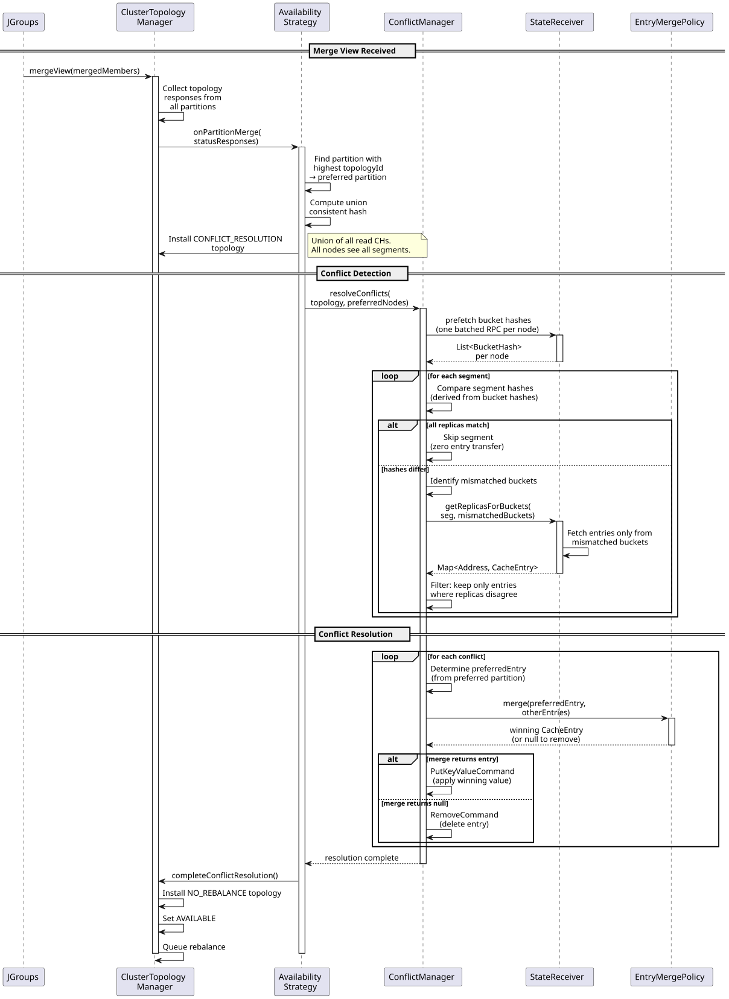
The merge proceeds in phases:
-
Topology collection — The coordinator collects the current topology and availability mode from every node across all partitions. The partition with the highest topology ID is designated the preferred partition.
-
Conflict resolution topology — A special
CONFLICT_RESOLUTIONphase topology is installed with a consistent hash that is the union of all distinct read consistent hashes from each partition. This ensures every node can access every segment during conflict detection. -
Conflict detection — The
ConflictManageriterates through each segment and fetches all replica values from their respective owners using theStateReceiver. Entries where replicas disagree are identified as conflicts. -
Merge policy application — For each conflict, the configured
EntryMergePolicydetermines the winning value. ThepreferredEntrycomes from the preferred partition;otherEntriescontains values from other partitions. -
Completion — A stable
NO_REBALANCEtopology is installed, the cache returns toAVAILABLEmode, and a standard rebalance is queued to restore the correct number of replicas.
1.8.6. Merge policies
The EntryMergePolicy interface determines how conflicting entries are resolved:
CacheEntry<K, V> merge(CacheEntry<K, V> preferredEntry,
List<CacheEntry<K, V>> otherEntries);Infinispan provides the following built-in policies:
| Policy | Behavior |
|---|---|
|
Always uses the entry from the preferred partition (the partition with the highest topology ID). |
|
Uses the preferred entry if it is not null; otherwise uses the first non-null entry from the other partitions. |
|
Returns |
|
Disables conflict resolution. The merge reinstalls the topology without comparing replicas. |
Applications can provide a custom EntryMergePolicy implementation for domain-specific resolution logic, such as choosing the entry with the latest timestamp or merging field-level changes.
1.8.7. Transactions during partitions
The PartitionHandlingManager tracks transactions that were in progress when a partition occurred:
- Partial rollbacks
-
Transactions where the rollback was sent but not all participants acknowledged it.
- Partial 1PC commits
-
One-phase commit transactions where the commit reached some but not all owners.
- Partial 2PC commits
-
Two-phase commit transactions that completed prepare but did not finish the commit phase.
When a stable topology is restored after a merge, onTopologyUpdate() completes these partial transactions — committing those that were prepared and rolling back the rest — before normal operation resumes.
1.9. Persistence
Infinispan provides a pluggable persistence layer that allows cache data to survive restarts, overflow from memory to disk, or act as a read-through/write-through layer to an external data source.
1.9.1. Store architecture
The persistence subsystem is managed by PersistenceManager, which coordinates one or more cache stores per cache.
Stores implement the NonBlockingStore interface, which provides a fully reactive API based on Reactive Streams.
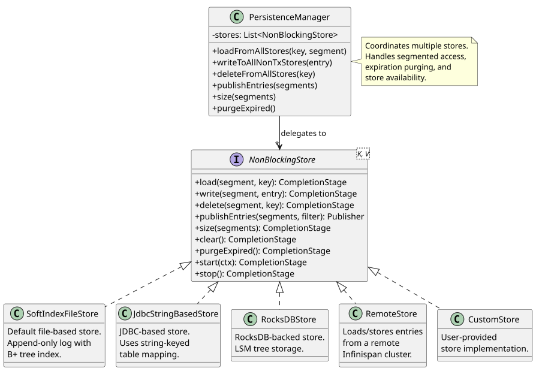
1.9.2. Integration with the interceptor chain
Persistence is wired into the cache operation flow through two interceptors:
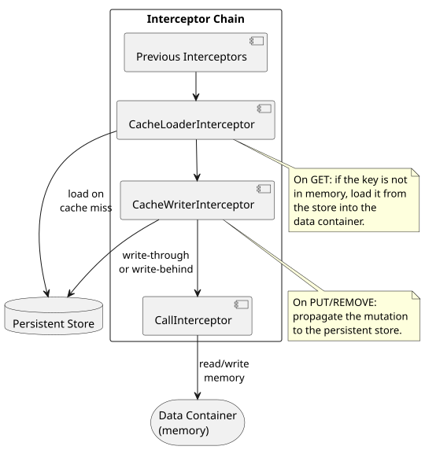
CacheLoaderInterceptor-
Intercepts read operations. When a key is not found in the data container (cache miss), it loads the entry from the persistent store and places it in memory.
CacheWriterInterceptor-
Intercepts write operations. After a mutation is applied to the data container, it propagates the change to the persistent store.
1.9.3. Write-through vs write-behind
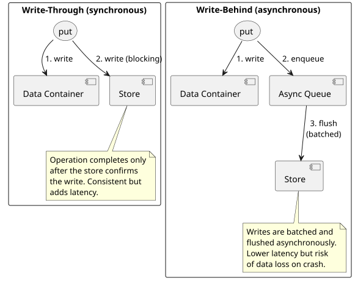
- Write-through
-
The store write happens synchronously as part of the cache operation. The operation does not complete until the store confirms the write.
- Write-behind
-
The store write is enqueued and flushed asynchronously in batches. This reduces latency but introduces a window where the store may lag behind the in-memory state.
1.9.4. Passivation
When passivation is enabled, entries evicted from memory are written to the persistent store rather than discarded. When the entry is accessed again, it is activated (loaded back into memory and removed from the store).
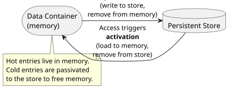
1.9.5. Segmented stores
Stores can be segmented, meaning they partition data by consistent hash segment. This enables:
-
Efficient state transfer: only segments whose ownership changed need to be read from the store.
-
Parallel iteration: segments can be iterated independently.
-
Store partitioning: different segments can map to different physical storage locations.
1.10. Notifications and listeners
Infinispan provides a publish-subscribe notification mechanism that allows applications to receive callbacks when cache entries are created, modified, removed, expired, or evicted. Listeners can be local (receiving events only from the node they are registered on) or clustered (receiving events from all nodes in the cluster).
1.10.1. Event model
Cache events are fired at two points during an operation: before the operation executes (PRE) and after it completes (POST).
All events implement the Event interface and carry a reference to the cache, the event type, and the PRE/POST flag.
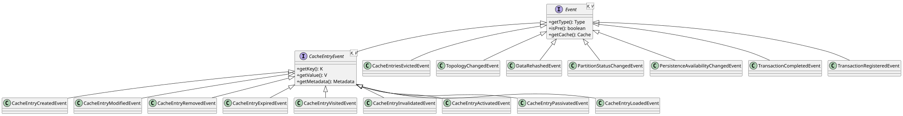
1.10.2. Listener registration
A listener is any object annotated with @Listener that has one or more methods annotated with event type annotations.
@Listener
public class MyListener {
@CacheEntryCreated
public void onCreated(CacheEntryCreatedEvent<String, String> event) {
if (!event.isPre()) {
// entry has been created
}
}
@CacheEntryModified
public void onModified(CacheEntryModifiedEvent<String, String> event) {
// ...
}
}
cache.addListenerAsync(new MyListener());The @Listener annotation supports several attributes:
| Attribute | Default | Description |
|---|---|---|
|
|
When |
|
|
When |
|
|
When |
|
|
When |
|
|
Controls whether the listener receives PRE events, POST events, or both. |
1.10.3. Notification flow
The CacheNotifier dispatches events to registered listeners.
Events are generated by the interceptor chain during cache operations.
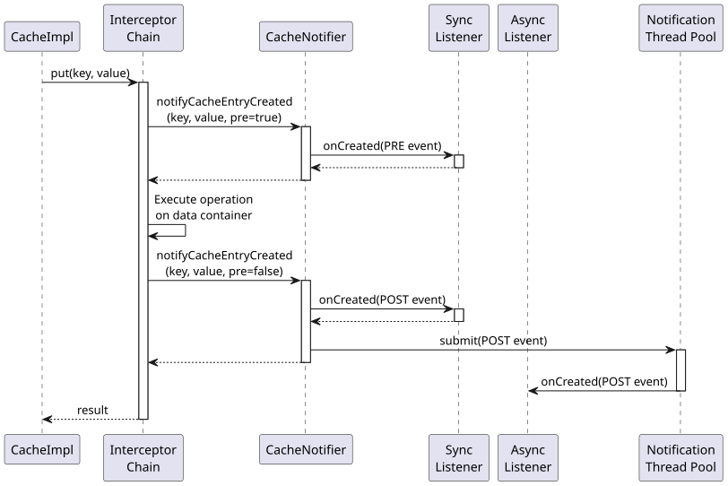
Synchronous listeners block the cache operation until they return, which is useful when the listener must execute as part of the same operation (e.g., updating a secondary index). Asynchronous listeners are dispatched to a notification thread pool, so the cache operation completes without waiting.
1.10.4. Filters and converters
Listeners can be registered with a CacheEventFilter to receive only matching events, and a CacheEventConverter to transform event data before delivery.
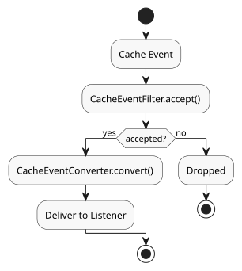
CacheEventFilter-
Evaluates each event against a predicate. Only events where
accept()returnstrueare delivered. CacheEventConverter-
Transforms event data (key, old value, new value, metadata) into a custom payload. Useful for reducing the data sent to remote listeners.
CacheEventFilterConverter-
A combined filter and converter for efficiency. The
filterAndConvert()method returnsnullto filter out events, or a converted value to accept and transform in a single pass.
Filters and converters are especially important for clustered listeners, where they reduce network traffic by evaluating on the event-producing node.
1.10.5. Clustered listeners
A clustered listener receives events from all nodes in the cluster, not just the local node.
This is enabled by setting @Listener(clustered = true).
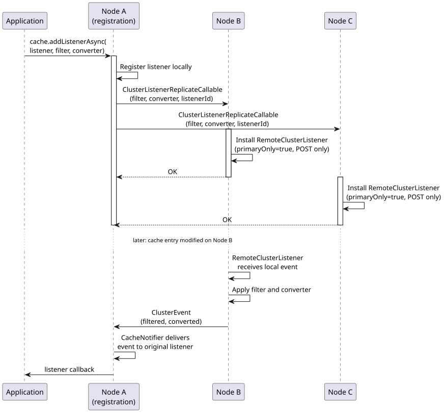
The clustered listener flow:
-
The application registers a listener on one node (the origin).
-
The origin sends a
ClusterListenerReplicateCallableto all other nodes, which installs aRemoteClusterListeneron each. -
The remote listener is configured with
primaryOnly = trueso each event is captured exactly once (on the primary owner of the affected key). -
When a cache entry changes on a remote node, the
RemoteClusterListenerapplies the filter and converter locally, then sends the resultingClusterEventto the origin node. -
The origin’s
CacheNotifierdelivers the event to the original application listener.
Clustered listeners support four event types: CacheEntryCreated, CacheEntryModified, CacheEntryRemoved, and CacheEntryExpired.
Only POST events are delivered (not PRE).
If the origin node leaves the cluster, all RemoteClusterListener instances installed for that listener are automatically removed.
1.10.6. Initial state transfer
When a listener is registered with @Listener(includeCurrentState = true), Infinispan delivers all existing cache entries as synthetic CacheEntryCreated events before the listener starts receiving live events.
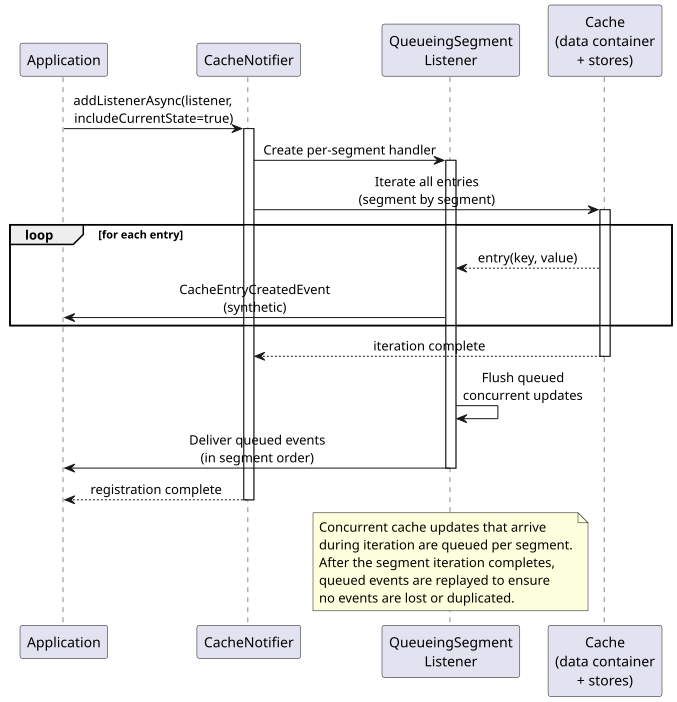
The initial state transfer uses a QueueingSegmentListener that iterates over cache entries segment by segment.
Any concurrent cache updates that arrive during the iteration are queued.
Once a segment’s iteration completes, the queued events for that segment are flushed to the listener.
This guarantees that the listener sees a consistent view: every entry is delivered exactly once, and no live events are lost during the transition.
For clustered listeners with initial state, all nodes participate: each node iterates its locally owned segments and sends the results to the origin node.
1.11. Querying and indexing
Infinispan provides a query engine that lets you search cached data using the Ickle query language. Queries can run in non-indexed mode (scanning all entries) or in indexed mode (backed by Lucene indexes managed through Hibernate Search). In clustered environments, queries are automatically distributed across the cluster.
1.11.2. Ickle query language
Ickle is the query language used by Infinispan.
It uses a SQL-like syntax parsed by an ANTLR-based grammar (IckleQueryStringParser) into an IckleParsingResult that includes the target entity, WHERE predicates, projections, GROUP BY, ORDER BY, and aggregations.
Example queries:
FROM org.example.Book WHERE title:'infinispan'
FROM org.example.Book WHERE price > 10 ORDER BY title
SELECT title, author FROM org.example.Book WHERE year >= 2020For indexed caches, Ickle predicates are translated into Lucene queries via Hibernate Search. For non-indexed caches, entries are scanned and filtered in-memory using object reflection.
1.11.3. Indexing
When indexing is enabled for a cache, Infinispan maintains Lucene indexes that are automatically updated as cache entries change. The indexing subsystem is built on top of Hibernate Search and its Lucene backend.
Index updates via the interceptor chain
The QueryInterceptor sits in the interceptor chain and intercepts all write operations.
When a write modifies an indexed entity, the interceptor triggers an index update.
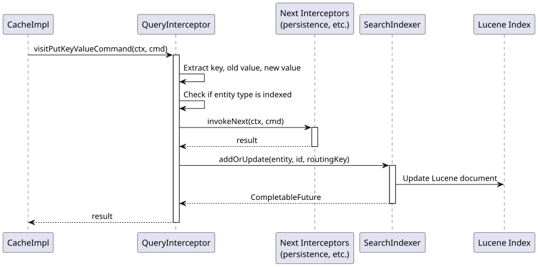
For transactional caches, a TxQueryInterceptor defers index updates until the transaction commits, collecting old values during the prepare phase and applying all index changes atomically at commit time.
Index storage
Each node maintains its own local Lucene indexes for the segments it owns.
Indexes are stored in memory by default but can be configured to use the filesystem.
The SearchMapping facade manages the lifecycle of all indexes, and the SearchIndexer provides the write API (add, addOrUpdate, delete, purge).
Index operations use the consistent hash segment as a routing key, which enables segment-level index partitioning and efficient cleanup during state transfer.
1.11.4. Clustered queries
In a distributed cache, query results are spread across multiple nodes. Infinispan automatically distributes indexed queries across the cluster and merges the results.
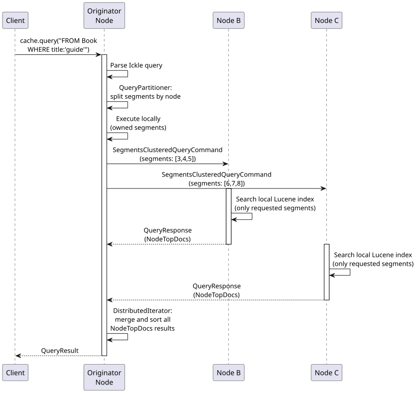
The distributed query flow:
-
The originator parses the Ickle query and uses the
QueryPartitionerto determine which segments each node owns. -
A
SegmentsClusteredQueryCommandis sent to each node, specifying the set of segments to search. -
Each node searches its local Lucene index, restricted to the requested segments, and returns a
QueryResponsecontaining the matching documents. -
The originator collects all responses and uses a
DistributedIteratorto merge, sort, and paginate the combined results.
This segment-based partitioning ensures that each entry is searched exactly once, even during topology changes.
1.11.5. Continuous queries
Continuous queries provide a push-based mechanism where listeners are notified in real time as cache entries start or stop matching a query predicate.
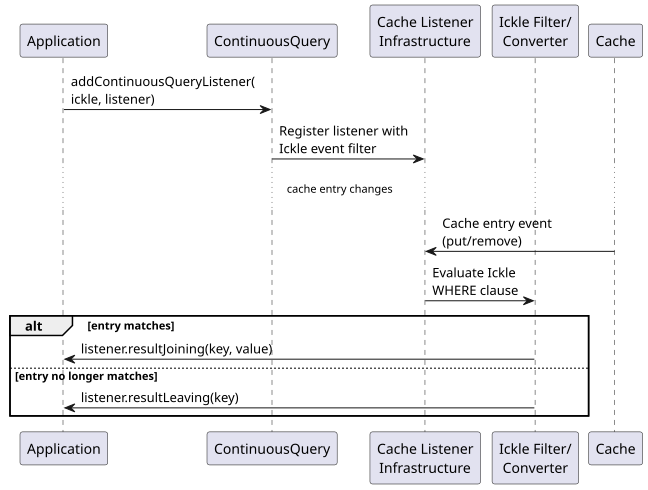
Continuous queries are implemented on top of the cache listener infrastructure.
When a continuous query is registered, an IckleContinuousQueryCacheEventFilterConverter is installed as a cache listener filter.
On every cache entry change, the filter evaluates the Ickle WHERE clause against the new value:
-
If the entry now matches the predicate, the
resultJoiningcallback fires. -
If the entry no longer matches (it previously did), the
resultLeavingcallback fires. -
If the entry continues to match with updated values, the
resultUpdatedcallback fires.
In clustered caches, the filter runs on the node that owns the entry, and matching events are forwarded to the listener’s node.
1.11.6. Mass indexing
When an index needs to be rebuilt from scratch (after configuration changes, data import, or corruption), the mass indexer reindexes all cache data in parallel across the cluster.
The DistributedExecutorMassIndexer sends IndexWorker tasks to each node.
Each worker iterates over the locally owned cache entries, extracts indexable values, and feeds them to the SearchIndexer.
A MassIndexerProgressMonitor tracks progress and reports errors.
1.12. Marshalling
Marshalling is the process of serializing Java objects into a binary format for network transmission and persistent storage. Infinispan uses ProtoStream, a Protocol Buffers-based marshalling framework, as its default serialization format.
1.12.1. Marshalling layers
Infinispan has two marshalling contexts:
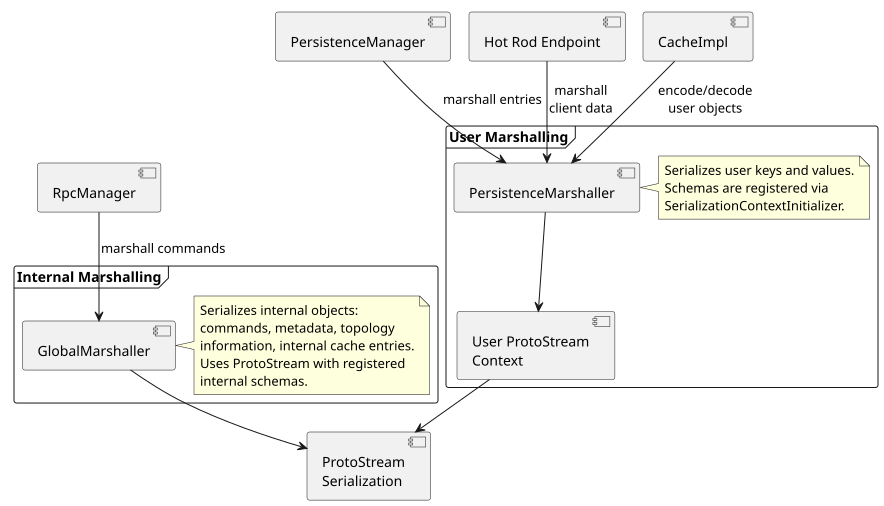
- Internal marshalling (
GlobalMarshaller) -
Handles serialization of Infinispan internal objects: commands, internal cache entries, topology information, and cluster protocol messages. These schemas are built into Infinispan and annotated with
@ProtoTypeId. - User marshalling (
PersistenceMarshaller) -
Handles serialization of user-provided keys and values. Users register their schemas via
SerializationContextInitializerimplementations that define.protoschemas and marshaller adapters.
1.12.2. ProtoStream serialization
ProtoStream maps Java objects to Protocol Buffer messages using annotations:
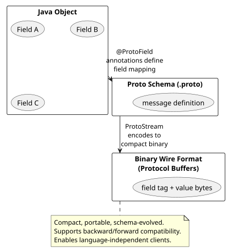
Key characteristics of ProtoStream marshalling:
-
Schema evolution: Fields can be added or removed without breaking existing data.
-
Compact binary format: Protocol Buffers encoding is significantly smaller than Java serialization.
-
Language independence: The
.protoschemas allow non-Java clients (C++, C#, Python) to read and write Infinispan data. -
Queryability: The self-describing schema enables server-side indexing and querying of cached objects.
1.13. Server architecture
The Infinispan Server wraps an embedded cache manager and exposes it through multiple network protocols. It is built on Netty for high-performance, non-blocking I/O.
1.13.2. Protocol endpoints
- Hot Rod
-
Binary protocol optimized for performance. Supports topology-aware clients that can route requests directly to primary owners, avoiding extra network hops. Features include near-caching, event listeners, and query.
- REST
-
HTTP-based endpoint for language-agnostic access. Supports JSON, XML, and binary encodings. Provides management operations (cache creation, cluster status, metrics) in addition to data access.
- RESP
-
Redis-compatible protocol endpoint. Allows Redis clients and tools to connect to Infinispan without modification.
- Memcached
-
Text and binary Memcached protocol support. Enables drop-in replacement for Memcached deployments.
1.13.3. Request processing
All protocol endpoints share the same underlying EmbeddedCacheManager.
This means a cache created via Hot Rod is accessible via REST and vice versa, with automatic media type conversion between encodings.
1.13.4. Single-port design
Infinispan Server multiplexes all protocols on a single TCP port (default 11222). The server inspects the first bytes of each connection to detect the protocol:
-
Hot Rod connections start with a specific magic byte (
0xA0). -
HTTP connections start with an HTTP method (
GET,POST, etc.). -
RESP connections start with Redis protocol markers.
This simplifies deployment and firewall configuration.
1.14. Authorization
Infinispan provides a role-based access control (RBAC) mechanism that restricts cache operations based on the authenticated user’s roles and permissions.
Authorization is enforced through a decorator pattern: when enabled, every cache returned by the cache manager is wrapped in a SecureCacheImpl that checks permissions before delegating to the underlying cache.
1.14.1. Authorization model
Infinispan uses a two-level mapping to connect authenticated users to permissions:
- Principals to roles
-
The
PrincipalRoleMappermaps security principals (obtained from authentication) to role names. The default implementation,ClusterRoleMapper, stores these mappings in an internal replicated cache (org.infinispan.ROLES) so that role grants are consistent across the cluster. If no explicit mapping exists, the principal name is used as a role name. - Roles to permissions
-
The
RolePermissionMappermaps role names toRoleobjects, each carrying a bitmask ofAuthorizationPermissionvalues. Permissions are combined using bitwise OR, so a user with multiple roles receives the union of all their permissions.
1.14.2. Default roles
Infinispan defines the following built-in roles:
| Role | Permissions |
|---|---|
|
All permissions. |
|
READ, WRITE, LISTEN, EXEC, CREATE, MONITOR. |
|
READ, WRITE, LISTEN, EXEC, MONITOR. |
|
READ, BULK_READ, MONITOR. |
|
MONITOR only. |
Custom roles with arbitrary permission combinations can be defined in the global configuration. Caches can optionally restrict which roles are allowed by listing specific role names in their authorization configuration; if no roles are listed, all inheritable global roles apply.
1.14.3. Secure cache wrapper
When authorization is enabled, the DefaultCacheManager wraps each cache in a SecureCacheImpl.
This wrapper interposes on every cache method to check the required permission before delegating.
The permission required depends on the operation:
| Operation | Permission |
|---|---|
|
READ |
|
WRITE |
|
BULK_READ |
|
BULK_WRITE |
|
LISTEN |
|
LIFECYCLE |
|
MONITOR |
|
ADMIN |
1.14.4. Subject management
Infinispan uses standard JAAS Subject objects to represent authenticated users.
The current subject is stored in a thread-local stack managed by the Security class.
Security.doAs(subject, action)-
Executes an action with an explicit subject. The subject is pushed onto a thread-local stack and popped when the action completes. Nesting is supported for operations that require switching subjects.
Security.doPrivileged(action)-
Executes an action in privileged mode, bypassing all authorization checks. Used internally by Infinispan components that need unrestricted access (e.g., state transfer, rebalancing).
1.14.5. ACL caching
Computing the permission mask for a subject requires mapping all of its principals to roles and combining their permissions.
To avoid repeating this on every operation, Infinispan caches the result as a SubjectACL keyed by the (subject, cache) pair.
The ACL cache is invalidated when role definitions or role mappings change, ensuring that permission changes take effect without restarting the cluster.
1.14.6. Audit logging
Every authorization decision (allow or deny) can be recorded by an AuditLogger.
NullAuditLogger-
The default — no auditing.
LoggingAuditLogger-
Logs authorization decisions to the
org.infinispan.AUDITlogger category, including the subject, permission, resource name, and decision. Also emits OpenTelemetry traces when tracing is enabled.
The audit logger is configurable in the global authorization settings.
1.15. Transactions
Infinispan integrates with JTA (Java Transaction API) to provide ACID semantics for cache operations. When a cache is configured as transactional, operations are enlisted in the current JTA transaction and committed or rolled back as a unit using a two-phase commit (2PC) protocol across the cluster.
1.15.1. Transaction modes
Infinispan supports two locking strategies for transactional caches:
- Optimistic locking
-
Locks are not acquired during operations. Instead, the transaction records a snapshot of the entry versions it has read. At prepare time, all modified keys are locked and a write skew check compares the current versions against the recorded snapshots. If another transaction modified the same key, a
WriteSkewExceptionis thrown and the transaction rolls back. This mode provides better read throughput when conflicts are rare. - Pessimistic locking
-
Locks are acquired immediately when a key is first accessed. This prevents concurrent modifications by blocking other transactions until the lock holder commits or rolls back. No write skew check is needed since conflicts are prevented up front. This mode is better when conflicts are frequent and the cost of rollbacks is high.
1.15.2. Two-phase commit protocol
Transactional writes are committed across the cluster using a two-phase commit (2PC) protocol.
- Phase 1 (Prepare)
-
The originator broadcasts a
PrepareCommandcontaining all modifications to every node that owns affected keys. Each node acquires locks, executes the modifications tentatively, performs write skew checks (for optimistic locking), and responds with success or failure. - Phase 2 (Commit)
-
If all nodes respond successfully, the originator broadcasts a
CommitCommand. Each node applies the changes permanently and releases locks. If any node fails the prepare phase, aRollbackCommandis broadcast instead.
One-phase commit optimization
For auto-commit transactions that modify a single key, Infinispan can combine prepare and commit into a single phase.
The PrepareCommand carries a onePhaseCommit flag, and the receiving nodes apply and commit in one step.
This halves the number of network round trips for simple operations.
1.15.3. JTA integration
Infinispan registers with the JTA transaction manager as either a Synchronization or an XAResource:
- Synchronization mode (default)
-
Infinispan registers a
SynchronizationAdapterwith the JTA transaction. The transaction manager callsbeforeCompletion()to trigger the prepare phase andafterCompletion()to trigger commit or rollback. This is simpler but does not support XA recovery. - Full XA mode
-
Infinispan enlists a
TransactionXaAdapteras anXAResource. This enables full XA two-phase commit with recovery support. After a crash, the transaction manager can callrecover()to list in-doubt transactions andcommit()orrollback()to resolve them.
1.15.4. Transaction table
The TransactionTable is the central registry of all active transactions on a node.
The transaction table maps JTA Transaction objects to LocalTransaction instances (for transactions originated on this node) and tracks RemoteTransaction instances (for transactions originated on other nodes).
Each transaction is identified cluster-wide by a GlobalTransaction containing the originator’s address and a sequence number.
The table also tracks completed transactions to prevent duplicate commit/rollback messages caused by network retries.
When a node leaves the cluster, cleanupLeaverTransactions() rolls back any unprepared transactions from that node and moves prepared ones to the recovery manager.
1.15.5. Write skew detection
In optimistic transactional caches with REPEATABLE_READ isolation, Infinispan detects conflicting concurrent modifications using entry versioning.
Each entry carries a SimpleClusteredVersion (topology ID + sequence number).
When a transaction reads an entry, it records the version.
At prepare time, the VersionedEntryWrappingInterceptor compares the recorded version against the current version.
If they differ, another transaction committed a change in between, and a WriteSkewException is thrown.
1.16. Encoding and media types
Infinispan stores cache entries in a configurable binary format and converts between formats on the fly. This encoding layer enables multiple protocols (Hot Rod, REST, RESP) to access the same cache using different data formats, and allows queries to index data regardless of how it was written.
1.16.1. Storage and request formats
Every cache has a configured storage media type that determines how keys and values are stored internally. When a client reads or writes data, it specifies a request media type that may differ from the storage format. Infinispan automatically converts between the two using transcoders.
Keys and values can have different storage media types, configured independently:
<encoding>
<key media-type="application/x-protostream"/>
<value media-type="application/x-protostream"/>
</encoding>The most common storage formats are:
application/x-protostream-
Protocol Buffers format. This is the default for server-mode caches and the recommended format because it supports querying, language-independent clients, and schema evolution.
application/x-java-object-
Raw Java objects stored by reference. This is the default for embedded-mode caches. Entries are not serialized for storage but must be marshalled when sent over the network.
application/octet-stream-
Raw byte arrays. Used when the application manages its own serialization.
1.16.2. Transcoders
A Transcoder converts data between two or more media types.
Transcoders are registered in the EncoderRegistry and looked up by (source, target) media type pair.
When no direct transcoder exists for a (source, target) pair, the registry automatically creates a TwoStepTranscoder that bridges through application/x-java-object as an intermediate format.
For example, converting from application/json to application/octet-stream would go: JSON → Java Object → byte[].
1.16.3. DataConversion
DataConversion is the per-cache component that ties together the request format, storage format, and transcoder lookup.
Each cache holds two DataConversion instances: one for keys and one for values.
On writes, toStorage() transcodes the client’s data to the storage format and wraps it.
On reads, fromStorage() unwraps and transcodes back to the client’s requested format.
1.16.4. Server format negotiation
When a client connects via Hot Rod or REST, it can specify the desired data format.
The server creates an EncoderCache wrapper with DataConversion instances configured for the client’s requested media types.
The AdvancedCache.withMediaType() method creates an EncoderCache that wraps the original cache with the client’s requested media types.
All subsequent operations through this wrapper automatically convert between the request format and storage format.
This means the same cache can be written to via Hot Rod in Protobuf format, read via REST as JSON, and queried via the Ickle engine — all with automatic format conversion.
1.17. Cross-site replication
Infinispan supports replicating data across geographically distributed clusters (sites) for disaster recovery and geo-locality. Each site runs an independent Infinispan cluster, and designated bridge nodes relay updates between sites.
1.17.1. Topology
Inter-site communication uses the JGroups RELAY2 protocol, which creates a virtual bridge channel between designated nodes in each site. Only bridge nodes participate in cross-site communication, minimizing network overhead.
1.17.2. Replication strategies
Infinispan supports two cross-site replication strategies:
- Synchronous
-
The originating site waits for acknowledgment from backup sites before completing the operation. Guarantees data is present on all sites when the operation returns. Adds latency equal to the inter-site round trip.
- Asynchronous
-
The originating site sends the update and completes immediately. Lower latency but backup sites may lag behind. This is the more common choice for geo-distributed deployments.
1.17.3. Active-active vs active-passive
- Active-passive
-
One site handles all traffic. The backup site receives replicated data and takes over only during failover.
- Active-active
-
Both sites handle read and write traffic from local clients. Updates are replicated bidirectionally. Concurrent writes to the same key on different sites create conflicts that must be resolved.
1.17.4. Conflict resolution (IRAC)
In active-active deployments, Infinispan uses the Irac (Inter-site Asynchronous Conflict resolution) subsystem to detect and resolve concurrent updates.
Each entry carries a vector clock (site version) that allows Infinispan to detect concurrent updates. When a conflict is detected, Infinispan applies a configurable merge policy to resolve it deterministically on all sites.
1.17.5. Integration with the interceptor chain
Cross-site replication is implemented through backup interceptors in the interceptor chain:
-
NonTransactionalBackupInterceptor: Handles replication for non-transactional caches. -
OptimisticBackupInterceptor: Handles replication for optimistic transactional caches. -
PessimisticBackupInterceptor: Handles replication for pessimistic transactional caches.
These interceptors intercept write commands and send XSiteReplicateCommand instances to backup sites via the JGroups RELAY2 bridge.